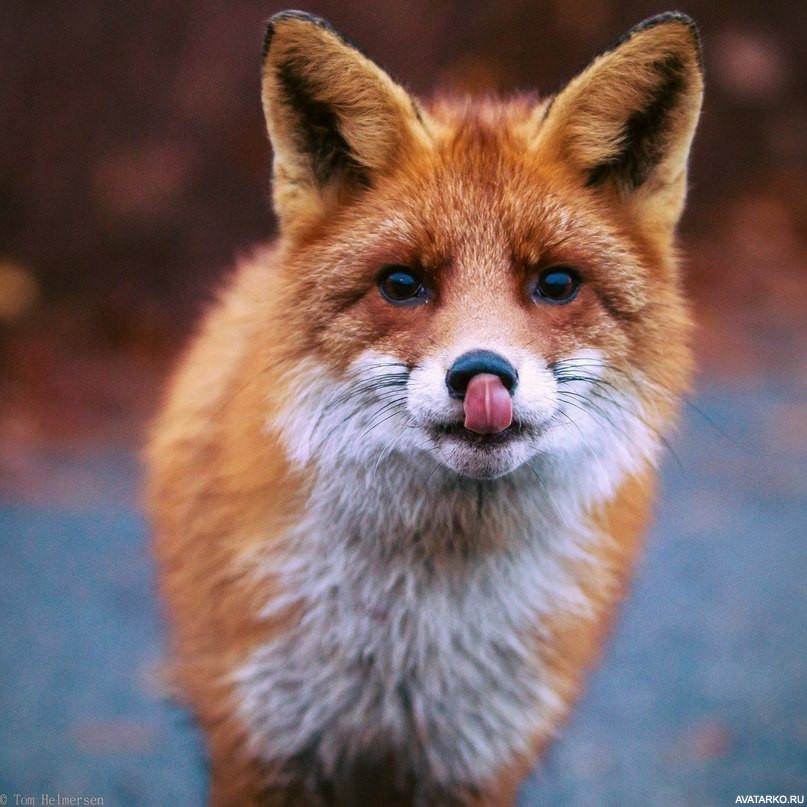

Лиса — это млекопитающее животное, которое относится к роду псовых. В группу лисиц включают только 11 видов: обыкновенная или рыжая, американская, африканская, афганская, бенгальская, корсак, песец, фенек, южноафриканская, островная, майконги, тибетская, песчаная, серая, дарвиновская, бразильская, парагвайская, секуранская. Самый распространенный вид — обыкновенная или рыжая лиса. Это самый крупный представитель своего рода, вес зверька достигает от 6 до 10 килограмм, длина тела без учета хвоста 60-90 сантиметров. Самой маленькой лисой является фенек. Длина тела фенека всего 30-40 сантиметров, вес не превышает 2 килограмм.
Обитает лиса на пяти континентах: Евразия, Африка, Северная Америка, Южная Америка, Австралия. Заселяют животные разные географические ландшафты степи, пустыни, тундры, леса, не исключением стали и окраины городов. Лисица прекрасно себя чувствует, находясь вблизи человеческих жилищ, и даже научилась извлекать из такого соседства выгоду.
Как правило, у представителей псового семейства имеются одинаковые признаки, касающиеся внешнего вида: • вытянутая голова; • заостренные уши; • худые лапы; • длинный и пушистый хвост. Читая интересные факты о лисицах, можно узнать много информации о строении тела животного и его повадках. Зверек имеет красивый окрас. Рыжие лисицы, которых можно встретить в русских лесах, обладают телом среднего размера и большим пушистым хвостом. Расцветки и размеры могут меняться, исходя от местности, где обитают эти животные. Длина тела зависит от породы и составляет от 55 до 90 см, а хвост – 60 см. Шерсть на груди, а также кончик пушистого хвоста белого цвета. Уши заостренные и с задней стороны имеют темный окрас.
